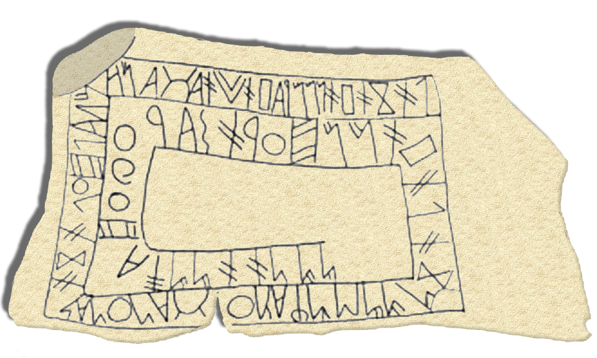
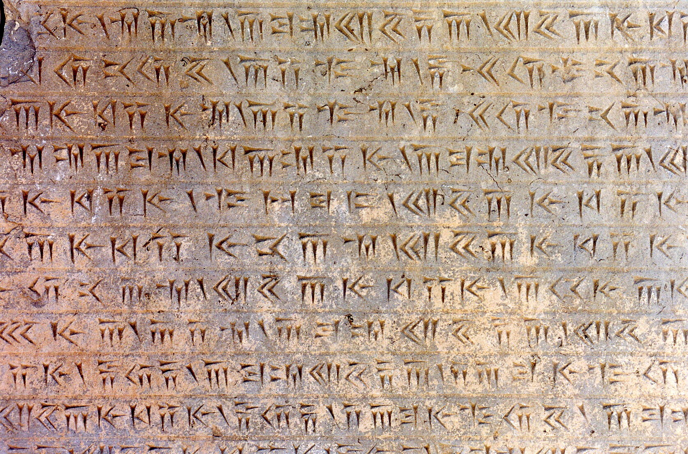
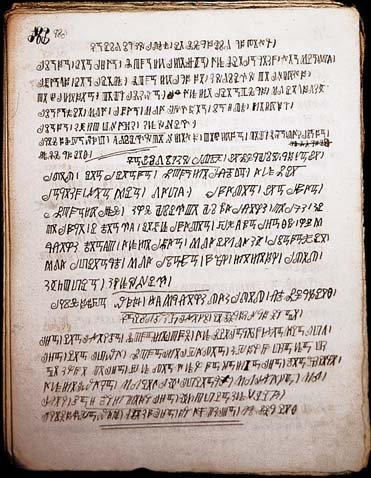
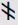
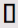

Tartessian inscription from Fonte Velha in the Southwest Paleohispanic script

Old Persian inscription from Persepolis

Bamum book in sixth iteration (Phase F) of the script[1]
What is a semisyllabary?
A semisyllabary is a type of writing system that shares features of both an alphabet and a syllabary.
While some syllabic scripts such as Cherokee and Kana are not considered semisyllabaries, they do share some elements with them. For example, the Cherokee letter Ꮝ has no syllabic value by itself and is pronounced s; The Kana letters ん/ン only represent n.
Common features of semisyllabaries
Many of their symbols represent consonant + vowel combinations, but some symbols only represent consonants or vowels.
Despite already having symbols with implied consonant + vowel combinations, some semisyllabaries still write the vowel after the syllabic symbol. For example, in the leftmost image above, the combination for poo is written   (right to left), but the o is already implied by the symbol po , which only ever occurs before o .[2]